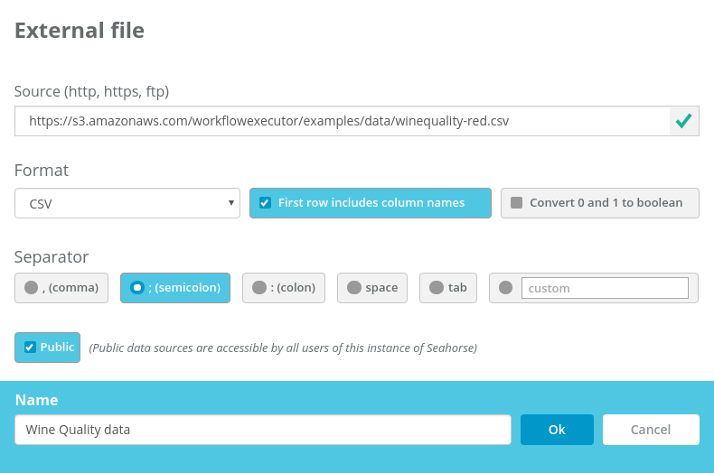
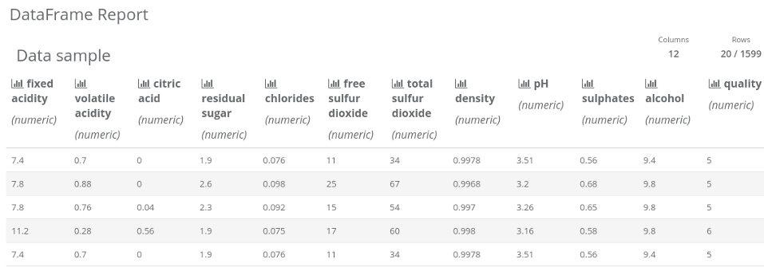
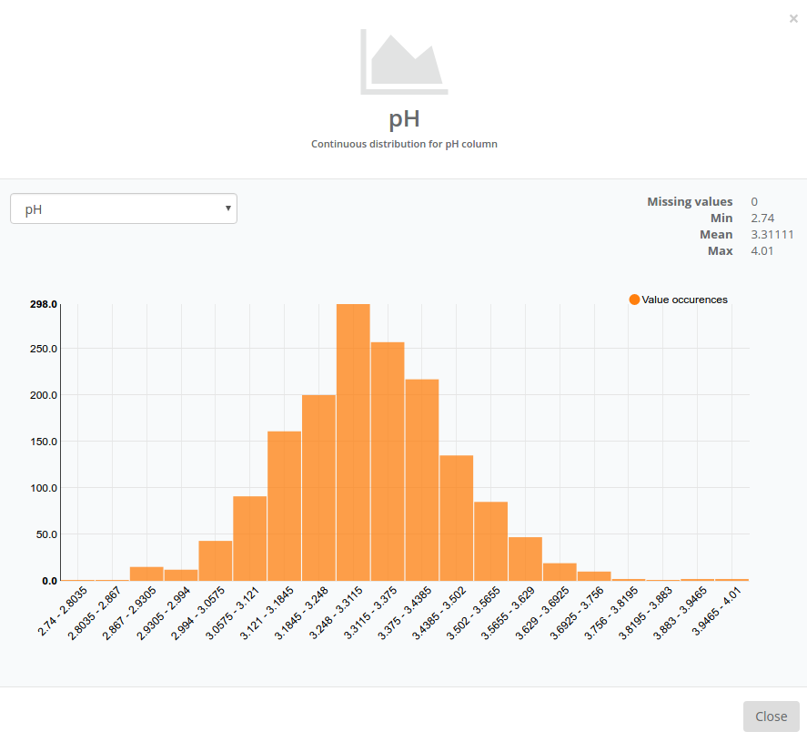
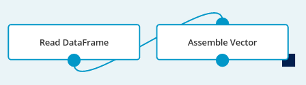
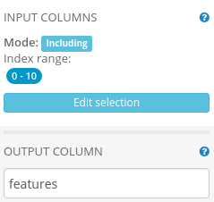
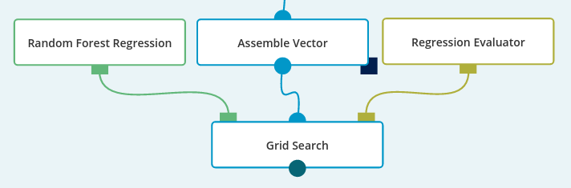
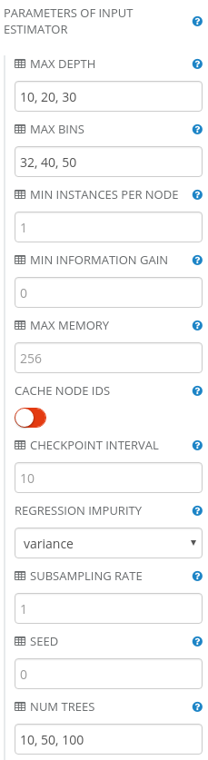
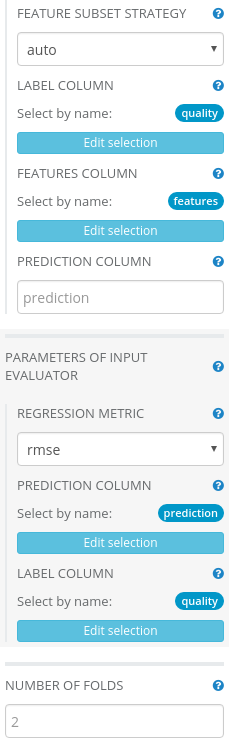
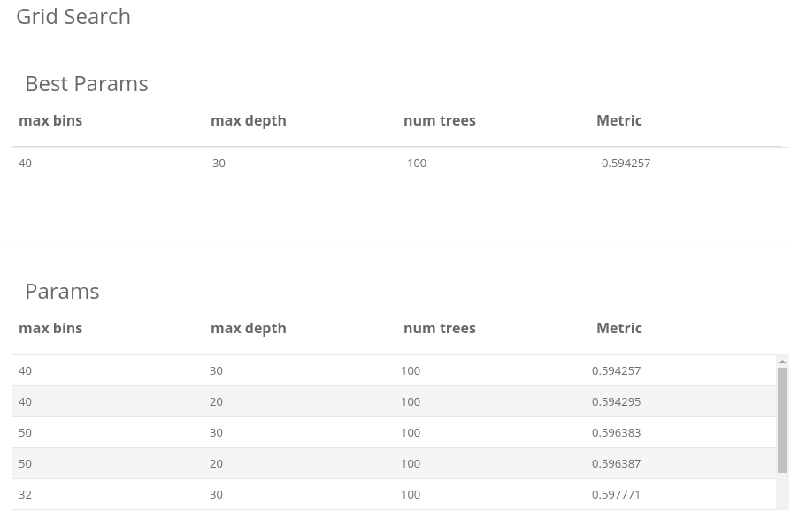
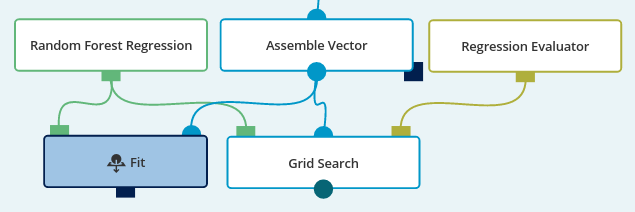

Dataset: winequality-red.csv.
Dataset size: 1,599 rows; 12 columns (11 numerical columns, 1 integer column).
Datasets description: The dataset contains a description of a set of wines. Each wine is described by a set of 11 features based on physicochemical tests like density or pH. Additionally to that, each type of wine has a score that describes the wine’s quality. The score is based on sensory data (median of at least 3 evaluations made by wine experts). Each expert graded the wine quality between 0 (very bad) and 10 (excellent).
Business purpose: Finding important features of wines that define wine quality as perceived by tasters.
Data set credits: Paulo Cortez, University of Minho, Guimarães, Portugal, http://www3.dsi.uminho.pt/pcortez A. Cerdeira, F. Almeida, T. Matos and J. Reis, Viticulture Commission of the Vinho Verde Region(CVRVV), Porto, Portugal 2009. Lichman, M. (2013).
UCI Machine Learning Repository http://archive.ics.uci.edu/ml. Irvine, CA: University of California, School of Information and Computer Science.
The data is provided in the form of a 12-column, semicolon-separated CSV-like file. The first row consists of column names. To work with the dataset, it has to be loaded into Analytical Engine. This can be done by Read DataFrame operation. Let’s place it on the canvas and create a new Data Source. To load the data, besides providing the correct path to the file, it is necessary to set the separator parameter to semicolon.

After setting Read DataFrame’s parameters to the correct values, the operation is ready to execute. When the execution ends, a report of the operation will be available. Let’s click on the output port to see it.

Now, we can explore the data a bit. The report included 20 sample rows. As we can see, each wine is described by a set of 11 numerical features and an ordinal score based on sensory data (column quality) that describes wine’s quality.
Moreover, you can see distributions of values for each column. Click on an icon in column’s header to see the distribution diagram, minimum value, maximum value, mean value and how many values are missing.

After some exploration we can see that no value is missing. Minimum values, mean values and maximum values summarizes the table below:
| Attribute | units | min | mean | max |
|---|---|---|---|---|
| Fixed acidity | g(tartaric acid)/dm3 | 4.6 | 8.319637 | 15.9 |
| Volatile acidity | g(acetic acid)/dm3 | 0.12 | 0.527821 | 1.58 |
| Citric acid | g/dm3 | 0 | 0.270976 | 1 |
| Residual sugar | g/dm3 | 0.9 | 2.538806 | 15.5 |
| Chlorides | g(sodium chloride)/dm3 | 0.012 | 0.087467 | 0.611 |
| Free sulfur dioxide | g/dm3 | 1 | 15.874922 | 72 |
| Total sulfur dioxide | g/dm3 | 6 | 46.467792 | 289 |
| Density | g/dm3 | 0.99007 | 0.996747 | 1.00369 |
| PH | 1 | 2.74 | 3.311113 | 4.01 |
| Sulphates | g(potassium sulphate)/dm3 | 0.33 | 0.658149 | 2 |
| Alcohol | % vol. | 8.4 | 10.422983 | 14.9 |
| Quality | 1 | 3 | 5.636 | 8 |
Now, we will try to investigate which features of wine have significant impact on the quality. There are many different ways of achieving this. One of the possibilities is to fit a regression model to the data. For example, we could use a Linear Regression or a Random Forest Regression. The first one exposes features weights that signify whether the feature has a positive or a negative impact (and how big the impact is) on the overall estimated value. Random Forest Regression exposes only importances of features, that help to determine whether the impact on the estimated value is high or low. Although, while it is not necessarily a rule, in many practical applications Random Forest Regression outperforms Linear Regression. Because of that we’ll choose Random Forest Regression.
Before we can train the Random Forest Regression to find out feature importance, we need to prepare the data. Some of Analytical Engine's algorithms operate on columns that contain a vector of features (instead of a set of columns with one value each). The regression is one of them and before we use it, we need to combine 11 feature columns to one column that contains a vector of the features. We’ll do this using an Assemble Vector operation.
Let’s put the Assemble Vector operation on the canvas and connect it as follows:

The next step is to set parameters to the two operations. In the Assemble Vector operation we have to select the columns to be groupedand the output column’s name. We want to select wine features excluding quality, that is columns from 0 to 10. Let’s call the vectorized output column “features”.

The Assemble Vector’s output DataFrame has a format that the regression can work on - we are now ready to start playing with the regression. The regression allows to predict one column’s value basing on other columns’ values. In our case, you will want to create a Random Forest Regression model that predicts the quality of wine based on the value of features column. Then, we will take a look at the model to see how important each feature is.
To create a model, we have to use Fit operation. Random Forest Regression has many parameters that affect its behavior. It is not a trivial task to find the best values of parameters. Usually, it is done experimentally. Advanced knowledge about the Random Forest Regression algorithm is required. To overcome this issue, we’ll use a Grid Search operation and let another algorithm find the best values for us. To use the Grid Search operation we define value sets for each parameter of a model. The Grid Search will fit as many models as there are combinations of the parameters. Later, it evaluates prediction correctness (using an Evaluator) of all models. Finally, we end up with a report that summarizes Grid Search results and shows the best combination of parameters.
Place the Grid Search operation on the canvas. It has 3 inputs. To the middle one, we’ll connect the first output port from the Assemble Vector operation, as we want to feed the Grid Search with the DataFrame that the Assemble Vector operation produces. To the left-hand port we’ll connect the Random Forest Regression - let’s place it on the canvas. To the right-hand port we need to connect an Evaluator - place a Regression Evaluator on the canvas and connect it with the Grid Search.
A Regression Evaluator is capable of evaluating predictions made by a Regression. The evaluation is done using a certain metric. We’ll use RMSE (Root-Mean-Square Error), as it is the simplest to interpret.

Grid Search operation’s parameters combine the parameters from its input Regressor and Evaluator. In the parameters panel, set values of parameters of the input estimator to:
max depth: 10, 20, 30,
max bins: 32, 40, 50,
num trees: 10, 50, 100.
|  |  |
Using these value sets, we define 27 models (3 x 3 x 3) that need to be trained and then evaluated.
The last thing we need to set in the Grid Search operation
are the features column and the label column.
The former specifies which column contains the predictors
(i.e. the features on which our prediction will be based on).
We’ll set this parameter to features.
The latter specifies the column
containing true values of our predicted variable, for training purposes.
We’ll set this to quality.
Finally, leave other parameters with the default values and execute the workflow. As we mentioned, 27 models have to be trained and evaluated (twice, because of cross-validation) so the execution can take a couple of minutes. Afterwards, we can read parameters that got the best score. They can be read from Grid Search’s report. 
In our case the best parameters found are:
max bins: 40,
max depth: 30,
num trees: 100.
As we can see, none of the parameters (except number of trees) lays on the edge of the grid. We could increase number of trees because, generally for the Random Forest Regression, the more trees, the more accurate the results of regression. However, differences between 50 and 100 trees are rather small and further increase of the number of trees won’t have a significant impact on the quality. Moreover, computation time grows with the number of trees. We are going to use 100 trees in the Random Forest Regression as it’s a good compromise between accuracy and execution time.
Since we now know the best parameter values
we can use the Fit operation to train a Random Forest Regression model.
Edit Fit’s parameters according to the report generated by the Grid Search,
i.e. copy the best parameter values to the Fit operation. Then, select features as the features column and quality as the label column. Finally, execute the Fit operation.

Fit returns a trained model. In the model’s report we can inspect the feature importance vector. Value of the n-th cell in the vector roughly indicates how big an impact the n-th feature has on the overall prediction. The input features combined with their importance are:
| Attribute | Value |
|---|---|
| alcohol | 0.220 |
| sulphates | 0.149 |
| volatile acidity | 0.111 |
| total sulfur dioxide | 0.086 |
| density | 0.079 |
| chlorides | 0.074 |
| pH | 0.067 |
| fixed acidity | 0.065 |
| free sulfur dioxide | 0.060 |
| citric acid | 0.052 |
| residual sugar | 0.038 |
We’ve researched how important each feature of wine is for estimating its perceived quality. It turned out, that the two most important features are alcohol and sulphates concentration.
The trained model can be used to predict quality of wine. Wine grades were ordinal numbers, but the model generates real numbers. To convert real numbers to an ordinal number, we could round the prediction to the nearest ordinal number. If the prediction differs from the estimated value by no more than 0.5, then the rounded prediction will be the same number as the estimated value (it will be a correct prediction). If the difference is bigger than 0.5, but not bigger than 1.5, then the rounded prediction will be inaccurate by 1. Model’s RMSE is about 0.61. It means that the model’s predictions differ from the real values by no more than 0.61, on average. Thus, rounded predictions most likely will be inaccurate by 1. Even though the model turned out to be slightly inaccurate, it can be used to indicate whether the wine is good or bad, though, not so precisely.